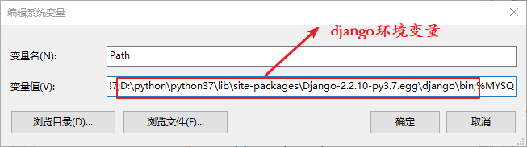
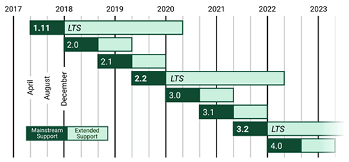
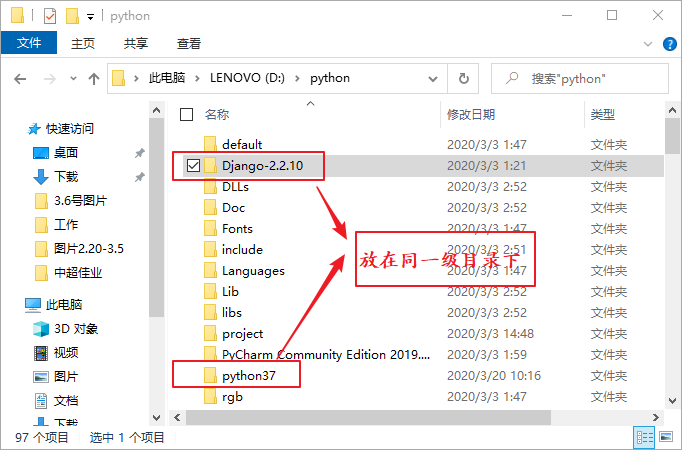
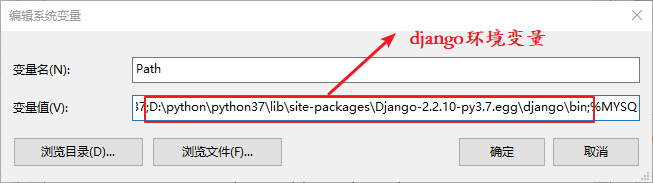
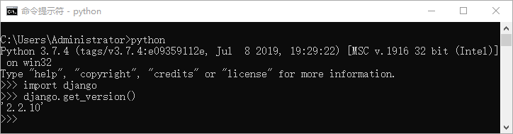

Django安装与配置教程（图解）
本节主要对 Django 在各个平台上的安装方式与配置进行讲解。
前文章节提到过，不同 Django 版本对 Python 版本的要求也是不一样的 ，Django 对 Python 版本的支持，如表格所示：
本教程的教学版本是 Django 2.2.10 版，Django 的官方网站不仅可以下载不同的 Django 版本（官方网址：https://www.djangoproject.com/download/），而且也提供了 Django 完善的使用文档。2019 年 4 月份，官网发布了最新的 LTS 版本 Django 2.2.10 ，我们选择最新的 LTS 版本来展开学习。下图是官网设定的 Django 不同版本的发布时间。

图3：Windows 离线安装方式

图4：配置 Django 环境变量
前文章节提到过，不同 Django 版本对 Python 版本的要求也是不一样的 ，Django 对 Python 版本的支持，如表格所示：
| Django版本 | Python版本 |
|---|---|
| 1.8 | 2.7, 3.2, 3.3, 3.4, 3.5 |
| 1.9, 1.10 | 2.7, 3.4, 3.5 |
| 1.11x | 2.7, 3.4, 3.5, 3.6 |
| 2.0 | 3.4, 3.5, 3.6, 3.7 |
| 2.1, 2.2 | 3.5, 3.6, 3.7 |
| 3.0 | 3.6, 3.7, 3.8 |
本教程的教学版本是 Django 2.2.10 版，Django 的官方网站不仅可以下载不同的 Django 版本（官方网址：https://www.djangoproject.com/download/），而且也提供了 Django 完善的使用文档。2019 年 4 月份，官网发布了最新的 LTS 版本 Django 2.2.10 ，我们选择最新的 LTS 版本来展开学习。下图是官网设定的 Django 不同版本的发布时间。

图1：Django 不同版本发布时间
图1：Django 不同版本发布时间
1. Windows系统安装Django
1) 离线安装
首先应该确定您的电脑已经安装了 Python 3.7 版本，然后通过 Django 官方网站下载 Django 2.2.10 压缩包。我们将下载完成的压缩包解压，并将解压后的文件和 python37 放在同一个目下。在 CMD 命令行工具中使用cd 命令进入 Django-2.2.10 文件夹，然后执行 python setup.py install 命令，这样就开始安装 Django 了，Django 将默认被安装到 python37/Lib/site-packages 文件夹下。

图2：Windows 离线安装方式
图2：Windows 离线安装方式
图3：Windows 离线安装方式
2) 在线安装
在 CMD 命令行中执行如下命令进行在线安装，安装时可以指定版本号：python -m pip install django==2.2.10
但是由于网络的不稳定性有时会导致下载失败，所以不推荐在线安装的方式，建议采用离线安装的方式。3) 配置Django环境变量
配置环境变量是 Windows 系统下重要的一步，首先右击计算机->属性->高级->环境变量->编辑系统变量 path，然后在 path 里添加如下变量值：D:\Python37\Lib\site-packages\Django-2.2.10-py3.7.egg\django\bin;D:\Python37\Scripts
注意使用分号隔开。如图 4 所示，笔者的 Django 是安装在 D 盘中的，而大家进行配置的时候一定要根据 Django 的安装位置来编辑环境变量。当把环境变量配置完成后就可以使用命令来新建 Django 项目了。提示：注意此处的环境变量一定要配置正确，否则影响后续创建 Django 项目。

图4：配置 Django 环境变量
4) 检查是否安装成功
通过 CMD 命令行中进入 Python 交互解释器，用以下方式检查 Django 是否安装成功，若能成功返回 Django 版本号，则说明安装成功：

图5：查看 Django 版本
2. Linux和Mac系统安装Django
1) 使用终端在线安装
使用如下命令将默认安装 Django 的最新版本：$sudo pip3 install django
还可以指定版本号来进行安装，命令如下：$sudo pip3 install django==2.2.10
2) 下载安装包离线安装
在官方网站下载 Django 2.2.10 安装包，通过下面的命令解压并安装：$ tar -zxvf Django-2.2.10.tar.gz $ cd Django-2.2.10 $ sudo python3 setup.py install安装完成后，进入 Python 交互解释器来检查 Django 是否安装成功，如下所示：
>>>import django >>>django.get_version() 2.2.10若安装过程中存在报错，请按上述步骤仔细检查。 本章完成了 Django 开发环境的基本搭建工作。下一章，我们将学习如何创建一个简单、可以运行的 Web 站点。
关注公众号「站长严长生」，在手机上阅读所有教程，随时随地都能学习。内含一款搜索神器，免费下载全网书籍和视频。

微信扫码关注公众号